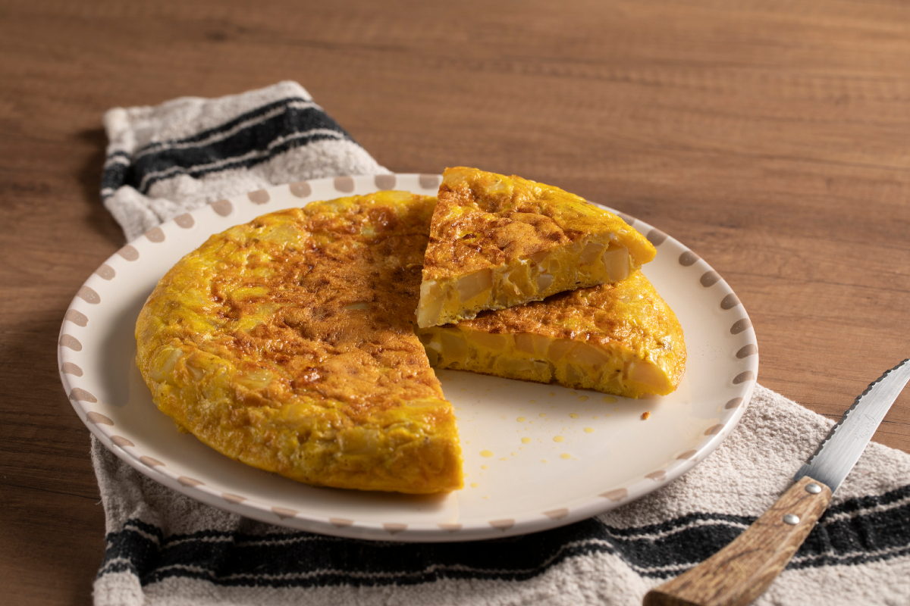

Tortilla de patatas

Descripción detallada de la foto
Tortilla de patatas gruesa y dorada, servida en un plato blanco con lunares marrones en el borde. Le falta una porción triangular, que está cortada y apoyada encima del resto, y deja ver el interior jugoso y amarillo con trozos de patata. En el hueco del plato quedan unas gotas de aceite. El plato descansa sobre un paño de cocina blanco con rayas negras, encima de una mesa de madera, y a la derecha asoma un cuchillo de sierra con mango de madera.
Ingredientes
- 4 patatas medianas
- 6 huevos
- 1 cebolla (opcional)
- Aceite de oliva virgen extra
- Sal al gusto
Comprar en Mercadona
Pasos
- Pelar y cortar las patatas y la cebolla en rodajas finas.
- Pochar las patatas y la cebolla a fuego lento en una sartén con abundante aceite de oliva hasta que estén tiernas.
- Escurrir bien las patatas y la cebolla para retirar el exceso de aceite.
- Batir los huevos en un bol grande con una pizca de sal, añadir las patatas y la cebolla, y mezclar bien. Dejar reposar unos minutos.
- Verter la mezcla en una sartén caliente con unas gotas de aceite y cuajar a fuego medio durante 3 o 4 minutos.
- Dar la vuelta a la tortilla con la ayuda de un plato y cocinar durante 2 o 3 minutos por el otro lado hasta que esté al punto deseado.